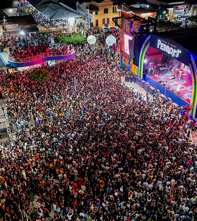

O Festival de Inverno de Pedro II é um evento anual gratuito realizado durante o feriado de Corpus Christi, reunindo música, cultura e
turismo na cidade de Pedro II (PI). Em 2025, aconteceu de 19 a 22 de junho, na Praça da Bonelle, com atrações como Samuel Rosa,
Xande de Pilares, Baco Exu do Blues, Biquini, Nenhum de Nós, Detonautas, Marina Elali e Eduardo Lages.
Além dos shows, o festival valoriza a cultura local com feiras de artesanato em opala, gastronomia regional e atividades de ecoturismo.
A iniciativa, realizada pela Prefeitura de Pedro II em parceria com o Governo do
Estado e o Sebrae, busca fomentar a cultura,
atrair turistas e impulsionar a economia da
região.
A confirmar